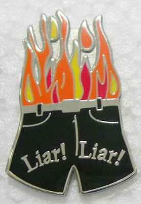

An ululation (aka ololuge or ololygmos) is a long, wavering, high-pitched sound resembling the howl of a dog or wolf with a trilling quality. It is produced by emitting a high pitched loud voice accompanied with a rapid movement of the tongue and the uvula. The term ululation is an onomatopoeic word derived from Latin. It is produced by moving the tongue, rapidly, from left to right repetitively in the mouth while producing a sharp sound. -- Wikipedia.
 "The Three Amigos" at the Knob Creek Machine Gun Shoot. From left to right: David Codrea, Len Savage and an old fat guy with a cane.
"The Three Amigos" at the Knob Creek Machine Gun Shoot. From left to right: David Codrea, Len Savage and an old fat guy with a cane.Folks,
It has been a long day.
When I got home this evening I received this from someone in the government:
Congratulations on staging a fine opera. I know I don't know all of what it took to pull it off, and can't imagine it, but have some notions of the difficulties. It worked because the right stuff aligned.
There's gonna be a lot of sore pussies at ATF --- not only is a week pretty short notice for a briefing, the prospect of getting salaries withheld for lying will get some attention, and ATF may try and lie anyway. But I doubt it will work, because I doubt the ATF Special Agents will go along with it, and there's no way to fool them.
Lying to Congress is as serious as it gets --- Congress could and would cut off funding for all of ATF, if that sort of thing persisted after the rattling of perjury sabers.
I noticed there are different versions of the Mexican press story, some short, some abridged; no telling what's up with that, but at this point that is a detail.
I sent the letters to a Washington Post reporter tonight. . .(REDACTED) . . .
Again, congratulations.
I was not the only recipient. It also went to the two other amigos pictured above, and for good reason. This was a group effort in applied karma.
I'll tell you flat out, I've been grinning like a chimp, to use my Grandpa Vanderboegh's phrase, since I got the Grassley letters this morning and posted them, scooping everybody including the Associated Press. So too, I suspect, have the other two amigos. So too are a lot of people, both within and without the government. This day has been a long time coming.
Today was a textbook case of not-so-instant Karma at the tipping point of the perpetual scandal that is ATF. And I'll be darned if I don't enjoy the screaming coming from the fifth floor. Waldo and others report that there are a number of people in ATF HQ, Main Justice and even the White House who are ululating in agony and thrashing around like their hair was on fire. Or perhaps it is only their pants.

I also heard early this evening from an experienced lobbyist well connected to the new Congress. That there will be ATF oversight hearings -- dealing with not only the death of Brian Terry and the Project Gunwalker scandal but with the whole panoply of ATF scandals mentioned in these pages over the past two years -- is said to be a bet-the-farm certainty.
And there is so much to look into. Let's count a few:
** Project Gunwalker and the death of Brian Terry (and the coverup of the circumstances of same) as well as the failure to apprise the Mexican government over the objections of ATF's own Mexico City attache.
** The framing and incarceration of David Olofson highlighting the scandal that is the lack of ATF standard testing procedures and regulatory transparency.
** The "economic Wacos" perpetrated by the ATF on people who had the gall to testify against them as expert witnesses in court or just because the agency didn't like their political opinions, epitomized by the case of Len Savage, including (but not limited to) regulatory harassment, knowing use of unreliable snitches, physical threats and intimidation, corrupt and unethical ex parte communications with federal judges.
** The profligate waste of taxpayer dollars in pursuit of an agenda, including most spectacularly the estimated more than a million dollars spent chasing a stuffed child's toy by the name of Ramsey A. Bear for almost two years, who a well-placed NFATCA snitch told them was an associate of Len Savage.
** The scandal that is the NFRTR, which the ATF always testifies under oath in prosecutions is accurate when they know damn well it is not. Such serial perjuries have sent more than one innocent man to jail over the years.
** The South Korean Garand rifle case, where the ATF persuaded the State Department to halt the importation of collector rifles based on a deliberately contrived report that such rifles were the preferred weapon of gang-bangers, even though they knew this wasn't the case and that such rifles were being sold by the federal government itself to marksmen and collectors through the Civilian Marksmanship Program.
** The systematic victimization of their own street agents who either ran afoul of out-of-control supervisors or who were trying to blow the whistle on agency mistakes. The website CleanUpATF.org is full of such incidents which up until now have been pooh-poohed by the agency and largely ignored by the press.
** The abuse, in the above attacks on street agents, of the EEOC process and the hired "legal experts" used to skew the process in the agency's favor.
** The gang of recidivist criminals that is the ATF Chief Counsel's Office, who throughout the cases above and others, never fail to sacrifice law and justice on the twin demi-god altars of their own anti-firearm agenda and personal internal power over the clueless directors as they come and go. It is the CCO which really runs the agency and is responsible for its current scandalous nadir.
David Olofson and family in a photo taken at the federal prison where he was incarcerated after being framed by ATF Agent Jody Keeku.
Those are a few of the scandals waiting to be ripped open under oath. There are others. Which brings me back to The Three Amigos.
We each first met the others at that Knob Creek Machine Gun Shoot which now seems like ancient history, though it was but a couple of years ago. David was by then an experienced firearm columnist and blogger. Len was legend in the firearms design and Class III community. I was a pissed off scribbler with a notorious past of waging cold war against federal bureaucracy in the furtherance of liberty. I remember sitting on the grass underneath a tree and talking with them about the case which excited our mutual contempt and outrage -- the framing of David Olofson.
David had loaned a semi-auto rifle to a young man who later would prove to have been an ATF snitch. Conveniently, when the young man took it to the range (without David being present), it malfunctioned after a couple hundred rounds and began to double or triple uncontrollably, firing out-of-battery, a dangerous condition. Jody Keeku, the ATF agent in charge of the case, sent the rifle to the Firearms Technology Branch in West Virginia for testing. They found it to be a malfunctioning semi-auto rifle, not a machine gun. Keeku told them to retest it using soft-primer ammunition. Told what to find, the FTB guys "found" it to be an automatic weapon and Olofson was charged with transferring a full-auto weapon in violation of the National Firearms Act of 1934.
David Olofson was represented by a federal public defender who, in my opinion (and he may sue me if he likes), was certainly ineffective and incompetent and possibly bought by the prosecution.
Len had been called late to the case as an expert witness. The judge, at the insistence of the ATF, refused to allow Len to even disassemble the weapon, let alone test it.
Not surprisingly, David Olofson was sent to federal prison.
Thus it was the Olofson case which brought me off the sidelines and the three of us together. The Three Amigos (I forget who used the term first, probably David) were more the "Three Guys Walking In The Same General Direction Over A Rickety Bridge," especially at first. Each of us had sources and strengths that complimented the others. Yet, our actions were by no means perfectly coordinated. Not hardly. As the inevitable point man, I often did and said things that made the others blanch in disagreement, usually after the fact. There were things that Len, as both an expert witness and subject of ATF court action, could not and would not tell me. There were other times when both he and David chided me for jumping on a fact or issue too hard. Len's cautions to me were famous and sometimes painful, again, usually after the fact. David's also. Along the way between then and now we Three Amigos added other members of what I have called "the willing coalition of Lilliputians" until we number in the dozens. We don't agree with one another on everything. Some, especially the street agents of the ATF, would say that they disagree with me on most things.
But there were certain things that we all agreed upon -- simple justice, the truth, the antiseptic quality of sunlight and the venality of the agenda-driven snake pit that was the Chief Counsel's Office. In every injustice perpetrated by the ATF hierarchy, there -- for those who looked close enough -- were the fingerprints of the CCO. Keeku could not have done what she did without the willing assistance of the CCO. The CCO directed the "economic Wacos" against Len Savage and others. The CCO perverted the EEOC process to attack street agent whistleblowers.
And added to this was the keen insight of Pete at WRSA, who was also underneath that tree that day in Kentucky: that no one, and I mean, NO ONE, really likes crooked lawyers, not even their own spouses and/or mistresses.
So we set out, we Three Amigos, simply sharing information, not wholly trusting one another then but united in common cause exemplified by the Olofson injustice. Gradually we built a very complete understanding of how the CCO machine worked and came to understand that its overweening arrogance was its fundamental weakness.
They were arrogant because no one of either political party had ever held them to account. They were above the law. They, in their own minds, WERE the law. So as bad as the Project Gunwalker scandal and the death of BPA Terry is, it is merely the latest expression of the corrupt practices of the senior executives and, especially, the Chief Counsel's Office of the ATF.
When they are called to testify under oath in the near future, they could all benefit from the profound wisdom expressed by the great American philosopher Frank Zappa in 1965.
Do you love it?
Do you hate it?
There it is,
The way you made it.
And to Jody Keeku, wherever she now is, I would add, "How do you like David Olofson's revenge?"
Mike Vanderboegh
The alleged leader of a merry band of Three Percenters
LATER: The Miami Herald and the Associated Press finally, officially, notice Project Gunwalker.